Web Platform Installer 4.5：WordPress のインストール
公開日：
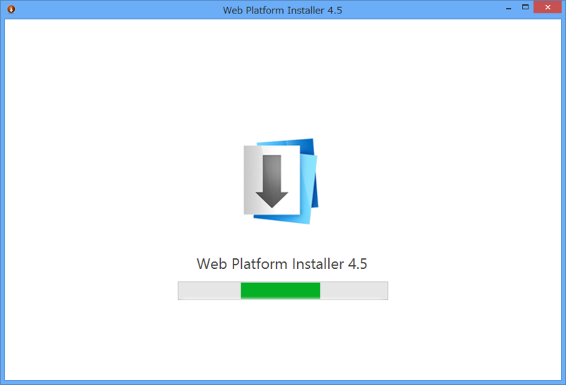
Web Platform Installer 4.5 の変更点はよくわからない*1。とりあえず WordPress をインストールしてみた。
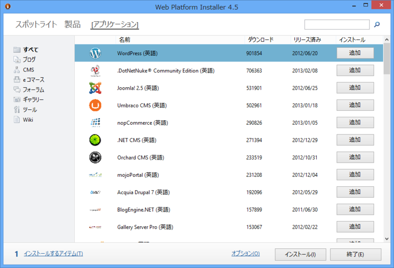
英語版しかないのかな。
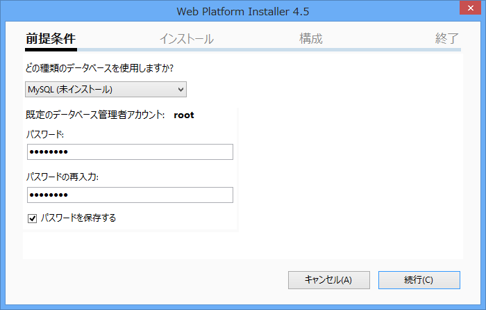
MySQL のインストール。ここでルートパスワードを指定する。
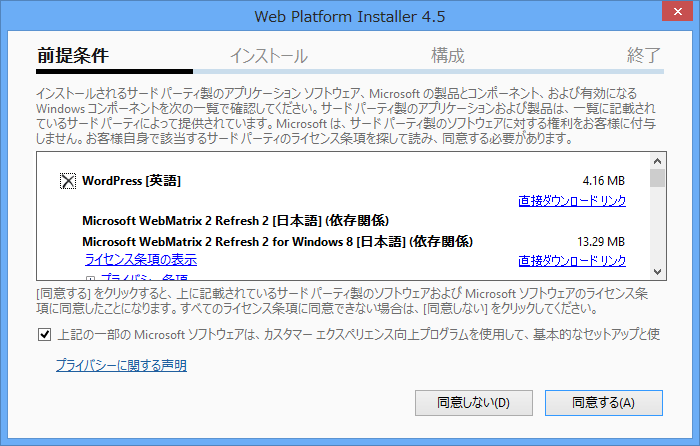
依存関係の確認。
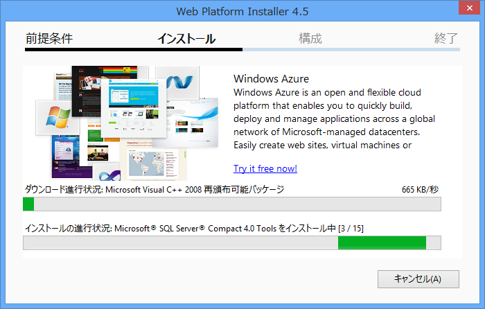
ダウンロードの開始。
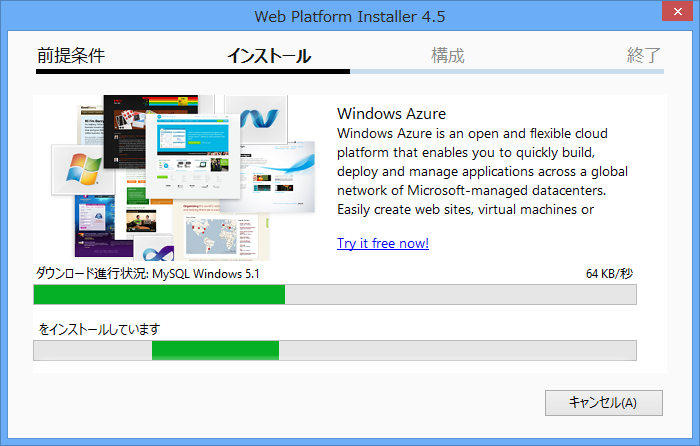
相変わらず MySQL 関連のダウンロードは遅い。たしか SourceForge あたりからダウンロードしてくるのだと記憶しているけれど、できれば Microsoft でホストしてほしいなぁ。
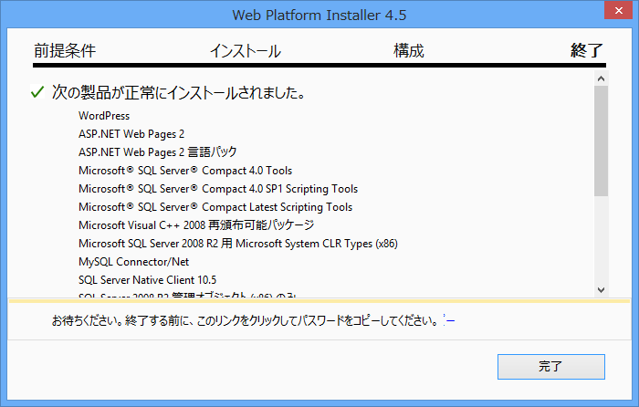
終了。パスワードがコピーできるらしい。こんなフェーズ、あったかしら。
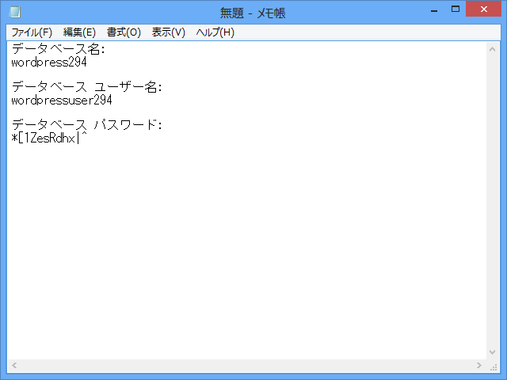
ちなみに、クリップボードの中身はこんな感じ。
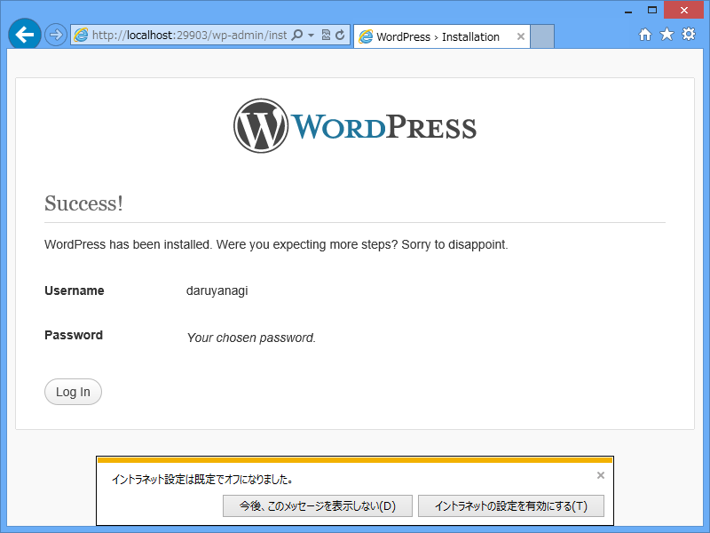
たった！たった！WordPress がたった！
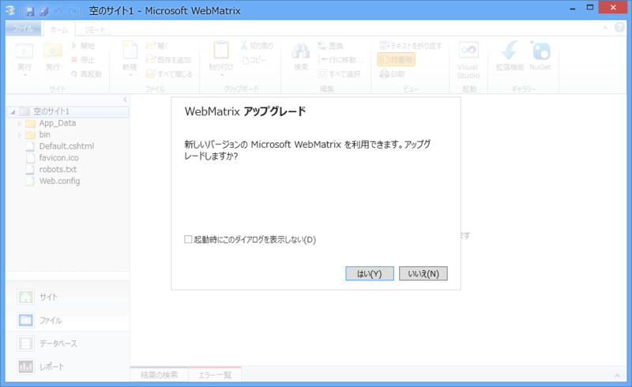
WebMatrix 2 のアップデートループは健在。無視するしかないみたい。
追記
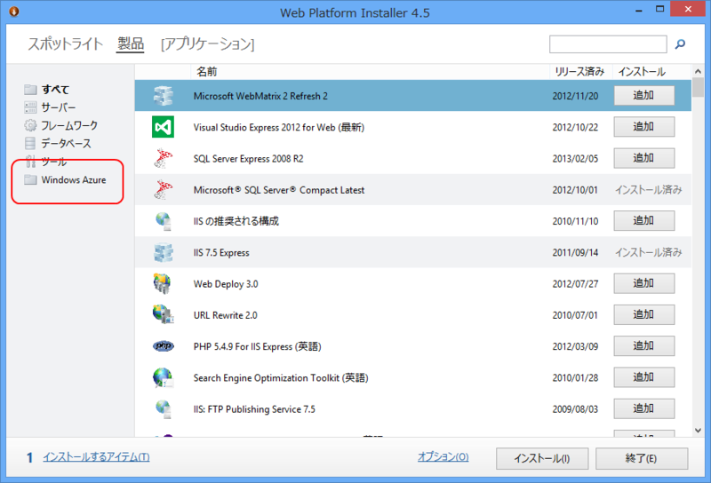
@daruyanagi Azure関係のSDKがカテゴリーにまとまっているのは確認しているのですが。それ以外がががｇ
2013-02-26 21:58:17 via HootSuite to @daruyanagi
気付かなかった！
*1:ちゃんと言ってくれればごにょごにょするのにさ